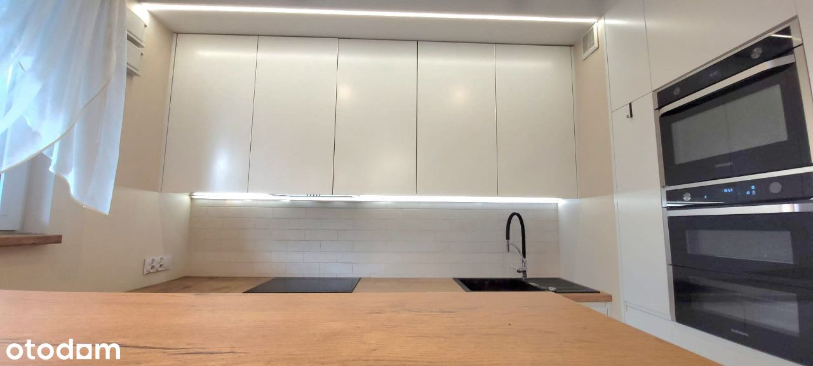
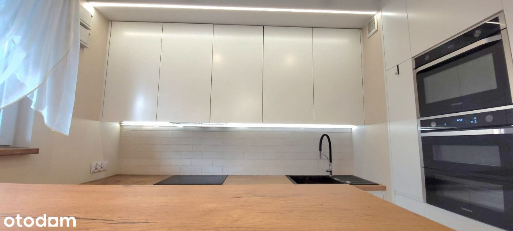
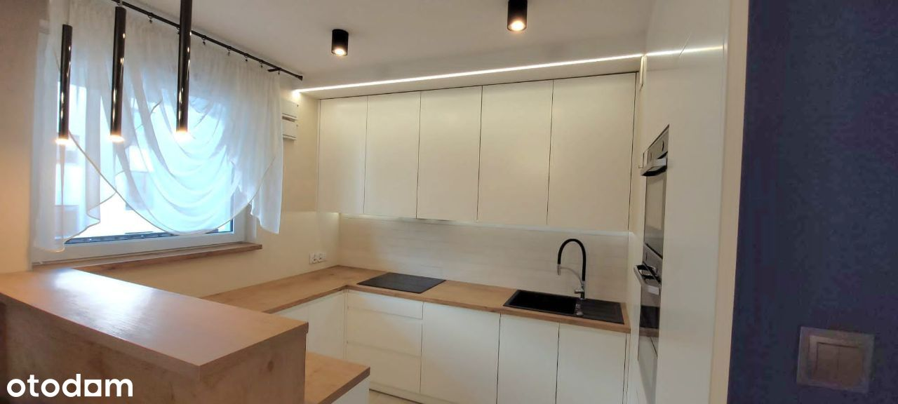
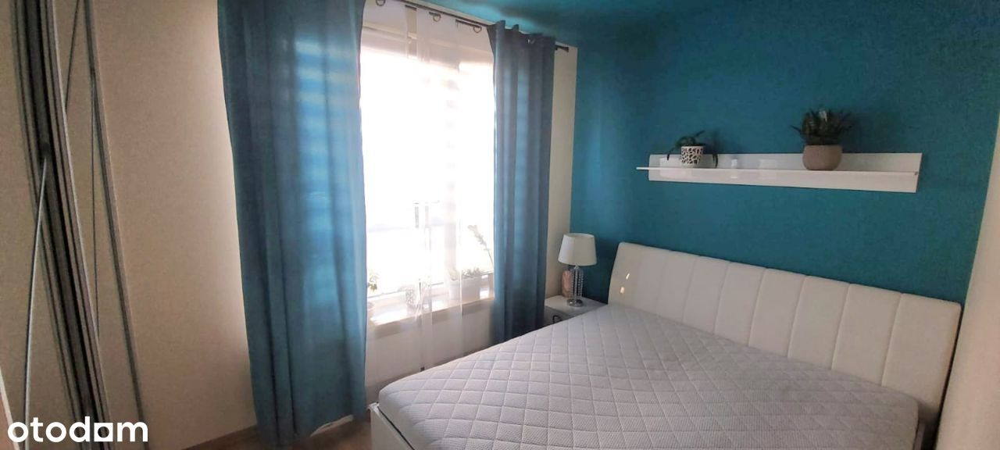
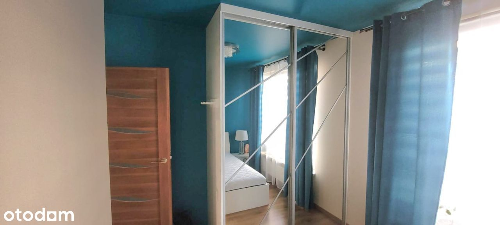
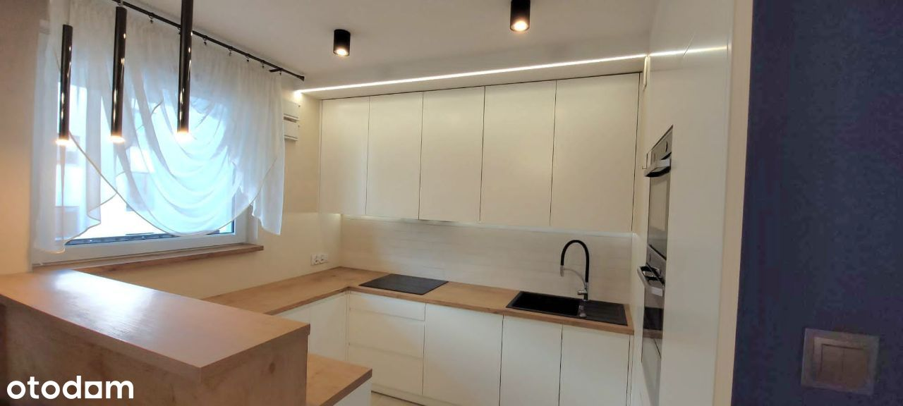
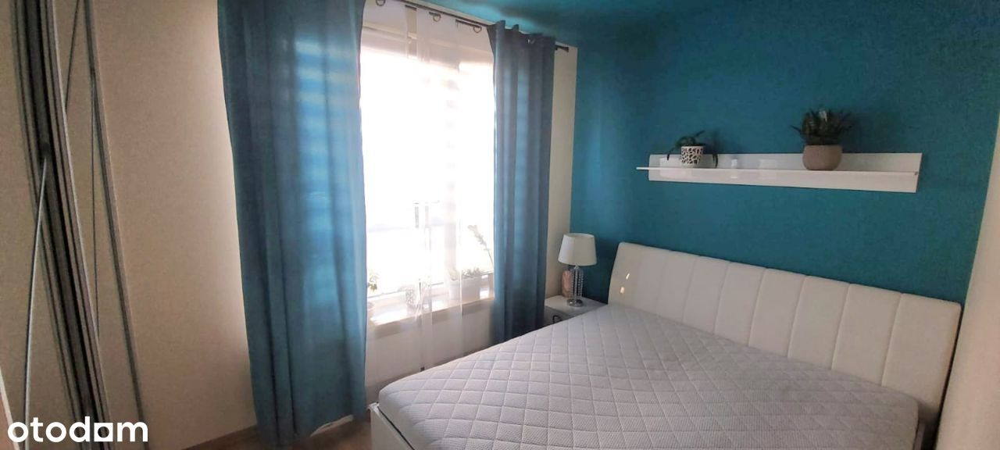
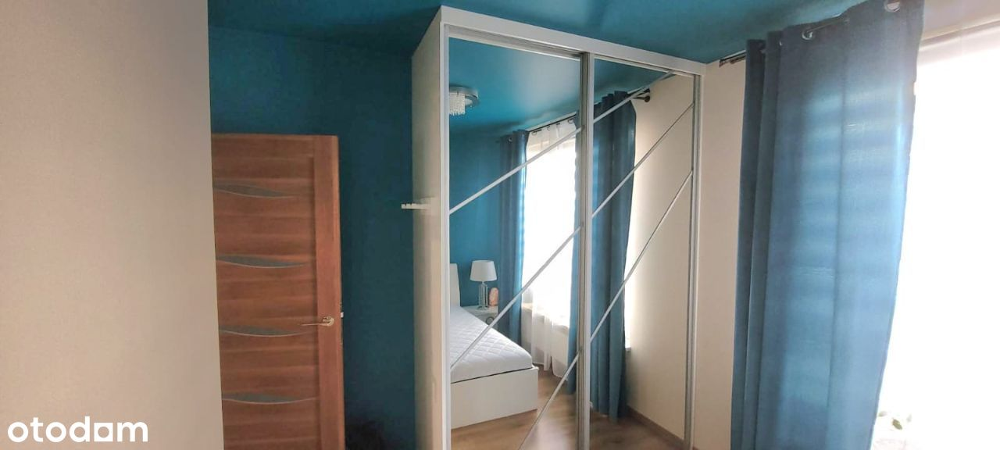
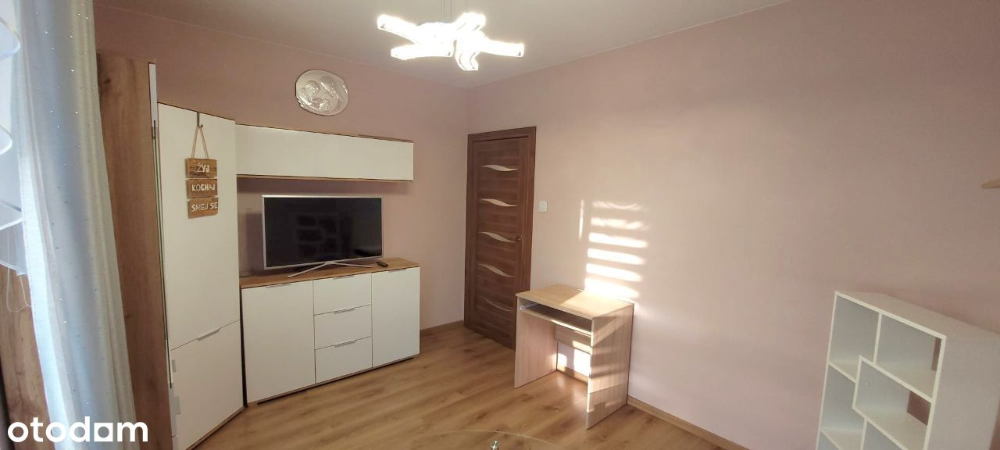
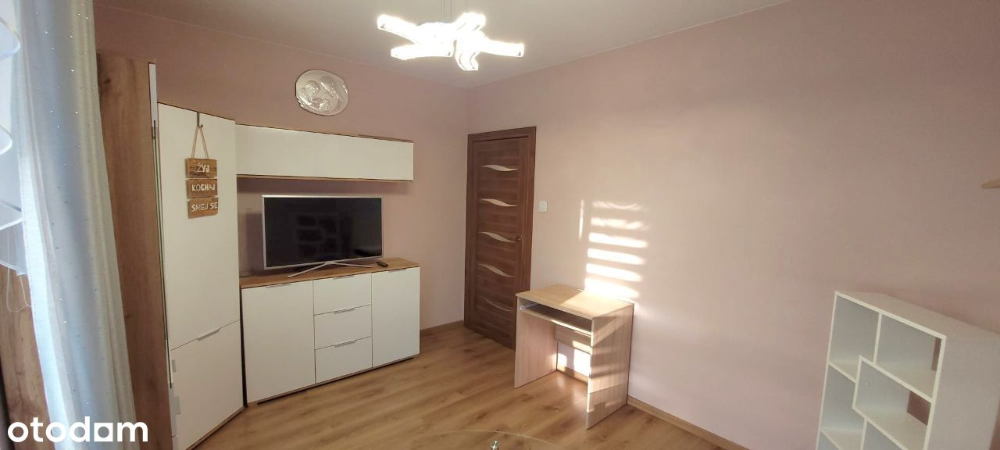

Sprzedam bezpośrednio mieszkanie o powierzchni 69,56m2
m2, gotowe do zamieszkania + miejsce w garażu podziemnym + komórka lokatorska, w Warszawie, w dzielnicy Targówek.
Nowoczesne, monitorowane osiedle z ochroną 24h, budynek z roku 2018, przy ulicy Pohulanka 3A, piętro 2 z 3.
Budynek położony w rozwiniętej części osiedla, z bardzo dobrym dostępem do komunikacji miejskiej oraz innych punktów handlowo-usługowych.
Przedmiotowa inwestycja zlokalizowana jest w południowo-wschodniej części dzielnicy Targówek. Osiedle mocno rozwijające się, z coraz bogatszą infrastrukturą.
Na terenie osiedla punkty handlowo-usługowe (kebab, burger, rossmann, pepco, kuchnia chińska, pizzerie, piekarnia, barber, żabka, duży ben), placówki oświatowe, przystanki, komunikacji miejskiej, przystanek kolejowy.
Do ulicy Radzymińskiej jest ok. 1,3 km. Do przystanku linii kolejowych Warszawa
Zacisze-Wilno jest ok. 450 m.
Stacja metra „Zacisze” w odległości ok. 2-2,5 km.
Przystanek kolejowy Warszawa Zacisze - Wilno (3 minuty pociągiem do Dworca Wileńskiego).
Ok. 8 km do Placu Bankowego oraz 10 km do PKiN
Sąsiedztwo terenów rekreacyjnych – Zalew Bardowskiego
Bliskość centrów handlowych - C.H. Atrium Targówek, M1, IKEA
Młodzi, mili sąsiedzi, na osiedlu zawsze "dzień dobry/cześć" powiedzą, jeśli trzeba to i paczkę odbiorą, gdy nie ma nas w domu.
Lokal dobrze usytuowany w budynku, na wyższej kondygnacji, dobrze doświetlony, okna na inne budynki. Mieszkanie składa się z pokoju z widnym aneksem kuchennym, 2 pokoi, 2 łazienek z wc (w jednej prysznic, umywalka, a w drugiej wanna, pralka, umywalka),
przedpokoju. Do lokalu przylega loggia.
Lokal wykończony materiałami dobrej jakości: na podłogach panele oraz terakota/gres,
na ścianach powłoki malarskie, łazienki z wc w glazurze, gresie i terakocie, aneks
kuchenny w zabudowie meblowej realizowanej na wymiar (wraz z zabudowanym
sprzętem AGD). W mieszkaniu zainstalowana klimatyzacja z funkcją grzania. W poszczególnych
pomieszczeniach szafy realizowane na wymiar.
Prawo do wyłącznego korzystania z komórki lokatorskiej.
Miejsce w garażu podziemnym dodatkowo płatne 35.000zł
Komórka lokatorska dodatkowo płatna 15.000zł.
Kontakt:
725307612
669892666
Agencjom i pośrednikom dziękuję.


 

 
 
